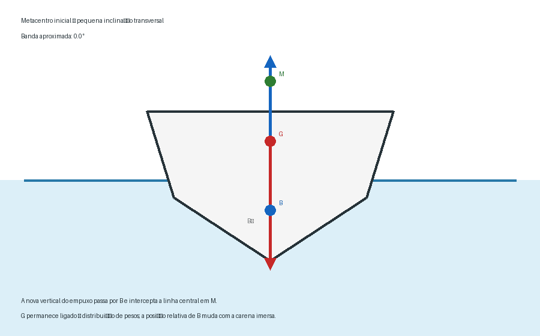

⚖️ Estabilidade, Arqueação e Deslocamento
Ship Stability, Tonnage and Displacement
Esta aula reúne três conceitos fundamentais da Arte Naval que, embora relacionados às características do navio, representam grandezas de natureza diferente: estabilidade, arqueação e deslocamento.
O estudo começará pela relação entre peso, empuxo e volume de água deslocado e avançará progressivamente para os elementos fundamentais da estabilidade transversal do navio.
Serão estudadas as posições do centro de gravidade, do centro de carena e do metacentro, bem como a altura metacêntrica, o braço de endireitamento e suas consequências sobre o comportamento da embarcação.
A arqueação será tratada separadamente, evitando a confusão frequente entre tonnage, displacement e capacidade de carga.
📊 Progresso da Aula
0% da aula concluída
📘 Identificação da aula
Disciplina: Arte Naval
Assunto: Estabilidade, Arqueação e Deslocamento
Termos técnicos principais: Ship Stability, Tonnage and Displacement
Nível: PSCPP
⏱ Cronômetro de Estudo
📖 Estudo
Estude com concentração durante o ciclo e utilize a pausa para descansar antes de iniciar uma nova sessão.
📋 Conteúdo programático
II — Arte Naval
Estabilidade, Arqueação e Deslocamento
- princípio de flutuação e equilíbrio do navio;
- deslocamento;
- relação entre peso, empuxo e água deslocada;
- centro de gravidade;
- centro de carena;
- metacentro;
- altura metacêntrica;
- equilíbrio e estabilidade transversal;
- braço de endireitamento;
- estabilidade inicial;
- estabilidade estática;
- influência da condição de carregamento;
- arqueação;
- arqueação bruta e arqueação líquida;
- distinção entre arqueação, deslocamento e capacidade de carga.
🎯 Objetivos de aprendizagem
Ao concluir esta aula, o aluno deverá ser capaz de:
- compreender o princípio físico que permite a flutuação do navio;
- relacionar o peso da embarcação com o peso da água por ela deslocada;
- distinguir peso, volume deslocado e deslocamento;
- identificar o centro de gravidade e o centro de carena;
- compreender o deslocamento do centro de carena quando o navio aderna;
- compreender a formação geométrica do metacentro inicial;
- interpretar o significado da altura metacêntrica GM;
- compreender a formação do braço de endireitamento GZ;
- relacionar a posição do centro de gravidade à estabilidade transversal;
- compreender as limitações do conceito de GM para ângulos maiores de inclinação;
- interpretar qualitativamente uma curva de estabilidade;
- compreender o conceito de arqueação;
- diferenciar arqueação bruta e arqueação líquida;
- não confundir arqueação, deslocamento e capacidade de carga;
- familiarizar-se com os principais termos técnicos correspondentes em inglês marítimo.
📚 Publicações utilizadas
Arte Naval — Volume 1
Publicação utilizada para os conceitos relacionados à geometria do navio, carena, deslocamento, tonelagem e demais definições fundamentais necessárias ao desenvolvimento deste assunto.
Autor: Maurílio M. Fonseca.
Edição: 8ª edição, 2019.
Trecho principal utilizado: Capítulo 2 — Geometria do Navio.
Estabilidade dos Rebocadores: Um Guia Prático para Operações Seguras
Publicação utilizada como referência para os princípios fundamentais de estabilidade, incluindo estabilidade transversal, centro de gravidade, centro de carena, metacentro, altura metacêntrica e braço de endireitamento.
Autores: Henk Hensen e Markus van der Laan.
Edição em português: 2022.
Trecho utilizado: Capítulo 2 — Princípios básicos de estabilidade.
Precisão bibliográfica
Os conceitos geométricos já desenvolvidos na aula de Nomenclatura, Geometria e Estrutura do Navio não serão repetidos integralmente.
Nesta aula, termos como carena, linha-d'água, calado e trim serão retomados somente quando sua utilização for necessária para compreender deslocamento ou estabilidade.
Os conceitos específicos dos rebocadores serão utilizados somente quando contribuírem para explicar os princípios gerais de estabilidade ou quando a aplicação operacional justificar essa diferenciação.
🗂 Organização da aula
- princípio da flutuação;
- deslocamento e água deslocada;
- centro de gravidade e centro de carena;
- adernamento e deslocamento do centro de carena;
- metacentro e estabilidade inicial;
- altura metacêntrica GM;
- braço de endireitamento GZ;
- estabilidade estática;
- influência da distribuição de pesos;
- comportamento de navios com diferentes níveis de estabilidade;
- arqueação;
- arqueação bruta e arqueação líquida;
- diferenças entre arqueação, deslocamento e capacidade de carga;
- aplicações operacionais;
- terminologia técnica em inglês marítimo;
- revisão e questões no padrão PSCPP.
PARTE 1 — FLUTUAÇÃO E DESLOCAMENTO
Antes de analisar por que um navio retorna ou não à posição de equilíbrio depois de adernar, é necessário compreender por que ele flutua.
O ponto de partida é a relação entre peso, empuxo e volume de água deslocado.
Essa relação estabelece a base física para o conceito de deslocamento e permitirá compreender posteriormente a função do centro de carena na estabilidade.
1. Princípio de flutuação do navio
Quando uma embarcação flutua livremente e permanece em equilíbrio, duas forças verticais fundamentais atuam sobre ela.
- o peso da embarcação, atuando verticalmente para baixo;
- o empuxo hidrostático, atuando verticalmente para cima.
Para que o navio permaneça flutuando em equilíbrio estático, essas forças possuem a mesma intensidade e sentidos opostos.
Condição de equilíbrio vertical
W = FB
Onde:
- W = peso total da embarcação;
- FB = força de empuxo ou força de flutuação.
Princípio fundamental
A embarcação flutuante desloca uma quantidade de água cujo peso corresponde ao peso da própria embarcação.
Portanto, quando o peso do navio se modifica, a condição de imersão também precisa se modificar até que seja restabelecido o equilíbrio.
Figura 1. Representação esquemática do equilíbrio vertical entre o peso da embarcação e o empuxo hidrostático.
⚠ Atenção PSCPP
Não confunda volume de água deslocada com peso da água deslocada.
O primeiro é uma grandeza de volume. O segundo é uma grandeza de peso e está diretamente relacionado ao deslocamento da embarcação.
🌐 Termos técnicos
- Buoyancy — flutuabilidade;
- Buoyant force — força de empuxo ou força de flutuação;
- Weight — peso;
- Displaced water — água deslocada;
- Displaced volume — volume deslocado.
2. Deslocamento
O deslocamento, ou displacement, representa o peso do navio em determinada condição de carregamento.
Como uma embarcação flutuando em equilíbrio desloca uma quantidade de água cujo peso é igual ao seu próprio peso, o deslocamento também pode ser determinado a partir do volume da carena e da densidade da água em que o navio flutua.
Relação fundamental
Δ = ρ × ∇
Onde:
- Δ = deslocamento;
- ρ = densidade da água;
- ∇ = volume de água deslocado, correspondente ao volume imerso da carena.
Significado físico
O símbolo ∇ representa um volume.
Ao multiplicar esse volume pela densidade da água, obtém-se a massa correspondente da água deslocada e, conforme o sistema de unidades empregado, relaciona-se essa grandeza ao deslocamento do navio.
Fisicamente, quanto maior for o peso da embarcação, maior deverá ser o volume de água deslocado para que o equilíbrio de flutuação seja mantido.
Figura 2. Representação simplificada da alteração da imersão quando aumenta o peso total da embarcação.
Consequência da adição de peso
Quando carga, combustível, água, provisões ou outros pesos são adicionados ao navio, seu peso total aumenta.
Para recuperar o equilíbrio, a embarcação afunda até deslocar uma quantidade adicional de água compatível com o novo peso.
⚠ Atenção PSCPP
Deslocamento não é volume.
O volume da parte imersa é utilizado para determinar a quantidade de água deslocada. O deslocamento do navio está associado ao seu peso.
Essa distinção será especialmente importante quando compararmos mais adiante deslocamento, porte e arqueação.
🌐 Termos técnicos
- Displacement — deslocamento;
- Displacement volume — volume de deslocamento;
- Underwater volume — volume imerso;
- Light displacement — deslocamento leve;
- Loaded displacement — deslocamento na condição carregada.
PARTE 2 — CENTRO DE GRAVIDADE E CENTRO DE CARENA
Conhecido o princípio de flutuação, podemos agora determinar onde atuam as duas forças fundamentais que mantêm o navio em equilíbrio: o peso e o empuxo.
O peso da embarcação atua através do centro de gravidade — G, enquanto a força de empuxo atua através do centro de carena — B.
A posição relativa desses pontos e, principalmente, o deslocamento do centro de carena quando o navio aderna constituem a base geométrica para compreender a estabilidade transversal.
3. Centro de gravidade — G
O centro de gravidade, representado pela letra G, é o ponto através do qual pode ser considerada atuando a resultante dos pesos que compõem a embarcação.
Através desse ponto atua, verticalmente para baixo, o peso total do navio.
Significado físico
O navio contém muitos pesos distribuídos em diferentes posições: estrutura, máquinas, combustível, água, carga, equipamentos, provisões e demais elementos existentes a bordo.
Para o estudo do equilíbrio, a ação conjunta desses pesos pode ser representada por uma única força resultante aplicada em G.
Figura 3. Representação conceitual do centro de gravidade e da direção de atuação do peso da embarcação.
A posição de G não é necessariamente permanente
A localização do centro de gravidade depende da distribuição dos pesos existentes a bordo.
Alterações na quantidade ou na posição de combustível, água, carga, provisões ou outros pesos podem alterar a posição de G.
⚠ Atenção PSCPP
G não representa um ponto geométrico fixo do casco.
Sua posição resulta da distribuição dos pesos. Portanto, mudanças na condição de carregamento podem mudar a posição do centro de gravidade.
🌐 Termos técnicos
- Centre of Gravity / Center of Gravity — centro de gravidade;
- G — símbolo usual do centro de gravidade;
- Weight — peso;
- Weight distribution — distribuição de pesos;
- Vertical Centre of Gravity — VCG — posição vertical do centro de gravidade.
4. Distribuição dos pesos e posição de G
A posição do centro de gravidade depende tanto da quantidade quanto da posição dos pesos existentes no navio.
Quando a distribuição desses pesos é modificada, a posição resultante de G também pode se modificar.
Movimento de um peso
Quando um peso existente a bordo é movimentado, o centro de gravidade do navio desloca-se na mesma direção do movimento desse peso.
A intensidade desse deslocamento depende da relação entre o peso movimentado, a distância pela qual ele foi deslocado e o deslocamento total da embarcação.
Figura 4. Representação qualitativa do deslocamento do centro de gravidade quando um peso é elevado no navio.
⚠ Consequência para a estabilidade
A publicação utilizada destaca que um centro de gravidade mais alto reduz a estabilidade inicial.
Consequentemente, pesos elevados, carga pesada no convés ou outras condições que elevem G merecem especial atenção.
A explicação completa dessa consequência será feita quando estudarmos GM na Parte 4.
5. Centro de carena — B
O centro de carena, representado pela letra B, corresponde ao centro geométrico do volume submerso da embarcação.
A força de empuxo atua verticalmente para cima através desse ponto.
Uma forma útil de visualizar B
Considere apenas o volume do casco situado abaixo da superfície da água.
O centro de carena ocupa o centro geométrico desse volume imerso.
Por isso, sua posição depende diretamente da forma assumida pela carena imersa.
Figura 5. O centro de carena B corresponde ao centro do volume submerso e constitui o ponto de aplicação da resultante do empuxo hidrostático.
⚠ Não confundir G e B
G está relacionado à distribuição dos pesos do navio.
B está relacionado à geometria do volume submerso.
São, portanto, pontos definidos por fenômenos diferentes.
🌐 Termos técnicos
- Centre of Buoyancy / Center of Buoyancy — COB — centro de carena;
- B — símbolo usual do centro de carena;
- Buoyant force — força de empuxo;
- Underwater volume — volume submerso;
- Submerged volume — volume imerso ou submerso.
6. O que acontece com B quando o navio aderna
Quando o navio está aprumado e possui uma geometria transversal simétrica, o centro de carena encontra-se no plano diametral.
Quando o navio sofre uma inclinação transversal ou heel, a forma do volume submerso se modifica.
Um bordo passa a apresentar maior imersão, enquanto o bordo oposto apresenta menor imersão.
Consequentemente, o centro geométrico desse novo volume submerso também muda de posição.
Este é o ponto-chave
O centro de carena B não permanece no mesmo ponto do casco durante uma inclinação.
Ele se desloca em direção ao bordo que adquiriu maior volume imerso.
Figura 6. Representação qualitativa do deslocamento do centro de carena de B₀ para B₁ quando ocorre uma pequena inclinação transversal.
Esta figura é apenas uma representação estática. Na versão final do tópico, este fenômeno poderá ser complementado pela animação do deslocamento de B, mostrando continuamente a alteração da geometria imersa à medida que o navio aderna.
Por que esse deslocamento é tão importante?
Ao mudar a posição de B, também muda a linha vertical através da qual atua o empuxo.
É justamente o comportamento dessa nova linha de ação do empuxo que permitirá definir, na próxima parte, o metacentro.
⚠ Atenção PSCPP
Não interprete o deslocamento de B como se um peso tivesse sido movimentado dentro do navio.
O ponto muda porque a geometria do volume submerso mudou.
Em contraste, G muda quando ocorre alteração na distribuição dos pesos.
7. Relação entre G e B
Neste ponto, podemos reunir os dois conceitos fundamentais.
O peso atua verticalmente para baixo através de G, enquanto o empuxo atua verticalmente para cima através de B.
Quando o navio está aprumado e em equilíbrio, essas forças encontram-se alinhadas verticalmente e possuem intensidades iguais.
Quando ocorre uma pequena inclinação
Se não houver alteração na distribuição dos pesos, G permanece na mesma posição relativa ao navio.
Entretanto, a geometria da carena imersa se modifica, fazendo B deslocar-se.
Consequentemente, a linha de ação do empuxo deixa de coincidir com a linha de ação do peso.
Figura 7. Após pequena inclinação, a mudança da posição de B desloca a linha vertical de ação do empuxo, enquanto a força peso continua atuando através de G.
Preparação para a próxima parte
Se prolongarmos a nova linha vertical de ação do empuxo, ela interceptará o plano diametral original do navio em um ponto particular.
Esse ponto será o metacentro inicial — M.
A partir dele poderemos compreender por que algumas posições de G produzem equilíbrio estável e outras podem tornar a embarcação instável.
🌐 Termos técnicos da Parte 2
- Center of Gravity — G — centro de gravidade;
- Center of Buoyancy — B — centro de carena;
- Heel — inclinação transversal ou banda;
- Upright condition — condição aprumada;
- Line of action — linha de ação de uma força;
- Buoyant force — força de empuxo.
⚠ Síntese para o PSCPP
Guarde esta diferença:
G acompanha a distribuição dos pesos.
B acompanha a geometria do volume submerso.
Essa distinção é indispensável para compreender corretamente metacentro, GM e braço de endireitamento.
PARTE 3 — INCLINAÇÃO TRANSVERSAL E METACENTRO
Na parte anterior observamos que, quando o navio sofre uma pequena inclinação transversal, a forma do volume submerso se modifica e o centro de carena B muda de posição.
Esse deslocamento produz uma nova linha vertical de ação do empuxo.
A interseção dessa nova vertical com a linha central correspondente à condição inicial permite definir um dos pontos fundamentais da estabilidade transversal: o metacentro inicial — M.
Esta parte desenvolverá essa construção geométrica sem avançar ainda para a análise completa dos diferentes valores de GM, que será feita na Parte 4.
8. Pequena inclinação transversal
Considere inicialmente uma embarcação flutuando sem banda.
Nessa condição, o centro de carena pode ser representado por B₀.
Quando o navio sofre uma pequena inclinação transversal, ou heel, o volume imerso deixa de possuir a mesma distribuição transversal existente na condição aprumada.
Como consequência, o centro desse volume submerso passa de B₀ para uma nova posição B.
O elemento que muda
A inclinação não desloca B porque algum peso se movimentou.
O deslocamento ocorre porque a forma da parte submersa do casco se modificou.
⚠ Atenção PSCPP
Nesta sequência, admita que não houve alteração na distribuição dos pesos.
Assim, G permanece associado à mesma distribuição de pesos, enquanto B muda devido à nova geometria da carena imersa.
9. Metacentro inicial — M
Após a pequena inclinação, o empuxo continua atuando verticalmente para cima através do novo centro de carena B.
Portanto, pode-se traçar uma nova linha vertical passando por B.
Para pequenas inclinações, o ponto em que essa nova linha de ação do empuxo intercepta a linha central associada à condição inicial é denominado metacentro inicial, representado por M.
Construção geométrica
A sequência conceitual pode ser resumida como:
inclinação → mudança do volume submerso → deslocamento de B → nova vertical do empuxo → metacentro M

Figura 8. Representação animada da formação geométrica do metacentro inicial. À medida que a embarcação sofre pequena inclinação, a posição relativa de B muda em consequência da alteração do volume submerso, e a nova vertical do empuxo passa pelo metacentro inicial M.
⚠ Observe a animação com atenção
Não interprete M como uma massa, um peso ou um ponto material existente fisicamente dentro da embarcação.
O metacentro é um ponto geométrico utilizado na análise da estabilidade.
🌐 Termos técnicos
- Metacentre / Metacenter — metacentro;
- Initial Metacentre / Initial Metacenter — metacentro inicial;
- Heel — banda ou inclinação transversal;
- Upright — aprumado;
- Centre of Buoyancy — B — centro de carena;
- Line of action of buoyancy — linha de ação do empuxo.
10. Relação geométrica entre B e M
A distância vertical entre o centro de carena B e o metacentro M é representada por BM.
Essa distância está relacionada à geometria da carena e à forma da área do plano de flutuação.
Ela não deve ser confundida com GM, que é a distância entre o centro de gravidade e o metacentro.
Três distâncias diferentes
- KB — distância vertical da quilha ao centro de carena;
- BM — distância do centro de carena ao metacentro;
- GM — distância do centro de gravidade ao metacentro.
Figura 9. Representação esquemática das posições relativas de K, B, G e M. As posições reais dependem da embarcação e de sua condição de carregamento.
⚠ Cuidado com o desenho
A figura acima é conceitual.
Não conclua que G obrigatoriamente estará sempre acima de B ou que as distâncias representadas possuem as proporções mostradas no esquema.
O objetivo é apenas identificar os pontos e as distâncias utilizadas na análise de estabilidade.
11. Altura metacêntrica — GM
Uma vez conhecidas as posições do centro de gravidade G e do metacentro M, define-se a altura metacêntrica como a distância entre esses dois pontos.
Definição geométrica
GM = KM − KG
Onde:
- GM = altura metacêntrica;
- KM = distância vertical da quilha ao metacentro;
- KG = distância vertical da quilha ao centro de gravidade.
Por que GM é importante?
A posição relativa de G e M permite avaliar a estabilidade inicial da embarcação para pequenos ângulos de inclinação.
Entretanto, a própria publicação ressalta que GM é um parâmetro de estabilidade inicial e sua utilização está associada a pequenos ângulos de inclinação, nos quais o metacentro inicial pode ser tratado como aproximadamente fixo.
⚠ Limite importante
Não utilize o valor de GM isoladamente para representar todo o comportamento de estabilidade da embarcação em grandes ângulos.
À medida que a inclinação aumenta, a análise deve considerar o comportamento completo da estabilidade, que será desenvolvido mais adiante com o braço de endireitamento GZ e a curva de estabilidade.
🌐 Termos técnicos da Parte 3
- Metacentric Height — GM — altura metacêntrica;
- Initial Stability — estabilidade inicial;
- Initial Metacentre — metacentro inicial;
- KB — altura do centro de carena acima da quilha;
- BM — raio/distância metacêntrica entre B e M;
- KG — altura do centro de gravidade acima da quilha;
- KM — altura do metacentro acima da quilha.
➡ Próxima etapa
Agora já possuímos todos os elementos necessários para interpretar GM.
Na Parte 4 serão comparadas três situações:
- M acima de G;
- M coincidente com G;
- M abaixo de G.
A partir delas serão desenvolvidos GM positivo, GM nulo e GM negativo, bem como suas consequências sobre o comportamento transversal da embarcação.
PARTE 4 — ALTURA METACÊNTRICA E ESTABILIDADE INICIAL
Na parte anterior foram definidos G, B e M, bem como a distância GM.
Agora podemos utilizar a posição relativa entre o centro de gravidade e o metacentro inicial para compreender a estabilidade transversal inicial da embarcação.
Para pequenas inclinações, três condições fundamentais serão analisadas:
- M acima de G;
- M coincidente com G;
- M abaixo de G.
Essas três configurações correspondem, respectivamente, às condições de equilíbrio estável, indiferente e instável.
12. GM positivo — equilíbrio estável
Considere inicialmente uma embarcação na qual o metacentro inicial M esteja situado acima do centro de gravidade G.
Nessa condição, a altura metacêntrica GM é positiva.
Condição
GM > 0
ou, geometricamente:
M acima de G
Quando a embarcação sofre uma pequena inclinação, o centro de carena B desloca-se em consequência da alteração da geometria do volume submerso.
A força de empuxo passa a atuar verticalmente através da nova posição de B.
Com M acima de G, as linhas de ação do peso e do empuxo formam um momento que tende a levar a embarcação novamente em direção à posição de equilíbrio.
Interpretação física
A embarcação apresenta uma tendência restauradora.
Após uma pequena inclinação causada por uma ação externa, surge um momento que tende a reduzir essa inclinação.
Figura 10. Representação conceitual de GM positivo. Com M acima de G, a pequena inclinação produz uma tendência restauradora.
⚠ Atenção PSCPP
A afirmação correta não é simplesmente “o navio é estável porque G está baixo”.
Para a estabilidade inicial, o que interessa é a posição relativa entre G e M.
M acima de G → GM positivo → equilíbrio estável.
13. GM nulo — equilíbrio indiferente
Considere agora a condição em que o centro de gravidade G coincide com o metacentro inicial M.
Nesse caso, a distância entre os dois pontos é nula.
Condição
GM = 0
ou:
G = M
Para a análise inicial e pequenas inclinações, não existe o braço associado ao momento restaurador que existiria quando M estivesse acima de G.
Equilíbrio indiferente
Essa condição é denominada equilíbrio indiferente ou neutral equilibrium.
Dentro da aproximação de estabilidade inicial, uma pequena inclinação não produz a tendência restauradora característica do equilíbrio estável.
Figura 11. Representação esquemática da condição GM = 0, na qual G e M coincidem.
⚠ Precisão conceitual
Estamos tratando de estabilidade inicial e de pequenos ângulos de inclinação.
Não extrapole automaticamente essa construção para todo o intervalo de estabilidade da embarcação.
14. GM negativo — equilíbrio instável
A terceira condição ocorre quando o centro de gravidade G está situado acima do metacentro inicial M.
Nesse caso, a altura metacêntrica é negativa.
Condição
GM < 0
ou:
G acima de M
Quando ocorre uma pequena inclinação, a disposição das linhas de ação do peso e do empuxo não produz a tendência restauradora existente na condição de GM positivo.
Ao contrário, o momento resultante tende inicialmente a aumentar a inclinação.
Equilíbrio instável
Essa condição corresponde ao equilíbrio instável.
Uma pequena perturbação tende a afastar a embarcação da posição aprumada inicial.
Figura 12. Representação conceitual de GM negativo. Com G acima de M, a condição inicial é instável.
⚠ Atenção PSCPP
Memorize a relação, mas compreenda o mecanismo:
GM > 0 → estabilidade inicial positiva.
GM = 0 → equilíbrio indiferente.
GM < 0 → equilíbrio inicial instável.
15. A magnitude de GM e a resposta do navio
Saber apenas que GM é positivo não encerra a análise.
A magnitude da altura metacêntrica também influencia a resposta inicial da embarcação às inclinações transversais.
GM positivo relativamente grande
Uma altura metacêntrica positiva maior está associada a uma ação restauradora inicial mais intensa.
A embarcação tende a apresentar movimentos de balanço mais rápidos.
Na terminologia marítima, essa característica é frequentemente descrita como stiff.
GM positivo relativamente pequeno
Uma altura metacêntrica positiva menor está associada a uma ação restauradora inicial menos intensa.
A embarcação tende a apresentar movimentos de balanço mais lentos.
Essa característica é frequentemente descrita como tender.
⚠ Mais GM não significa simplesmente “melhor”
Uma embarcação com grande GM pode possuir forte estabilidade inicial, mas também apresentar movimentos transversais mais rápidos e severos.
Por outro lado, uma embarcação com pequeno GM positivo apresenta menor ação restauradora inicial.
Portanto, GM deve ser interpretado como característica da estabilidade inicial e da resposta transversal, e não por uma regra simplista de “quanto maior, melhor”.
Figura 13. Comparação conceitual entre uma condição de maior GM positivo e outra de menor GM positivo.
🌐 Termos técnicos
- Positive GM — GM positivo;
- Negative GM — GM negativo;
- Neutral equilibrium — equilíbrio indiferente;
- Stable equilibrium — equilíbrio estável;
- Unstable equilibrium — equilíbrio instável;
- Stiff vessel / stiff ship — embarcação com forte estabilidade inicial, associada a GM relativamente grande;
- Tender vessel / tender ship — embarcação com menor estabilidade inicial, associada a GM positivo relativamente pequeno;
- Rolling — balanço transversal.
16. O que GM informa — e o que não informa
A altura metacêntrica GM é um parâmetro fundamental para avaliar a estabilidade inicial da embarcação.
Sua interpretação está associada à condição próxima da posição aprumada e a pequenos ângulos de inclinação.
GM responde principalmente à pergunta:
“Qual é a tendência inicial do navio quando sofre uma pequena inclinação?”
À medida que o ângulo de inclinação aumenta, a geometria do volume submerso continua se modificando e a análise da estabilidade não deve permanecer restrita à posição do metacentro inicial.
Passa a ser especialmente importante determinar a distância horizontal entre as linhas de ação do peso e do empuxo.
Essa distância é o braço de endireitamento — GZ.
⚠ Pegadinha conceitual
GM positivo não significa que o navio possui estabilidade positiva para qualquer ângulo.
GM caracteriza principalmente a estabilidade nas proximidades da condição inicial.
Para estudar o comportamento em ângulos maiores, precisaremos analisar GZ e a curva de estabilidade estática.
Ligação com a próxima parte
Até aqui perguntamos:
“O navio tende inicialmente a retornar?”
Na próxima parte, a pergunta será mais completa:
“Qual é o braço através do qual peso e empuxo produzem o momento de endireitamento?”
Essa passagem nos leva diretamente ao estudo de GZ.
PARTE 5 — BRAÇO DE ENDIREITAMENTO E ESTABILIDADE ESTÁTICA
A altura metacêntrica GM permite analisar a tendência inicial da embarcação quando ocorre uma pequena inclinação.
Entretanto, à medida que a embarcação aderna, é necessário observar diretamente a relação entre as linhas de ação do peso e do empuxo.
A distância horizontal entre essas linhas constitui o braço de endireitamento GZ, ou righting arm.
É por meio desse braço que o peso e o empuxo produzem o momento de endireitamento da embarcação.
17. Braço de endireitamento — GZ
Quando a embarcação está aprumada e em equilíbrio, o peso e o empuxo atuam ao longo da mesma linha vertical.
Nessa condição, não existe distância horizontal entre suas linhas de ação.
Quando a embarcação aderna, o centro de carena B muda de posição, e a nova força de empuxo passa a atuar verticalmente através dessa nova posição.
A força peso, por sua vez, continua atuando verticalmente para baixo através do centro de gravidade G.
Surge então uma distância horizontal entre as duas linhas de ação.
Essa distância é denominada GZ.
Definição fundamental
GZ é o braço de endireitamento.
Ele representa a distância horizontal entre a linha vertical de ação do peso e a linha vertical de ação do empuxo para determinada condição de inclinação.
Figura 14. Formação do braço de endireitamento GZ. O peso e o empuxo possuem a mesma intensidade na condição de equilíbrio vertical, mas suas linhas de ação ficam separadas quando a embarcação aderna.
⚠ Atenção PSCPP
GZ não é uma distância vertical.
Ele representa o braço horizontal entre as linhas verticais de ação do peso e do empuxo.
Também não deve ser confundido com GM.
GM é uma distância entre pontos geométricos; GZ é o braço efetivo utilizado na formação do momento de endireitamento.
🌐 Termos técnicos
- Righting arm — GZ — braço de endireitamento;
- Stability arm — braço de estabilidade;
- Line of action — linha de ação;
- Heel angle — ângulo de inclinação transversal;
- Righting tendency — tendência de endireitamento.
18. Momento de endireitamento
O braço GZ não representa sozinho uma força.
Ele funciona como um braço de alavanca entre as forças verticais de peso e empuxo.
Como o peso da embarcação atua através de G e o empuxo atua através da nova posição de B, essas forças formam um binário ou momento.
Momento de endireitamento
MR = Δ × GZ
Onde:
- MR = momento de endireitamento;
- Δ = deslocamento da embarcação;
- GZ = braço de endireitamento.
Significado físico
Para determinado deslocamento, quanto maior for o valor positivo de GZ, maior será o momento de endireitamento.
Assim, o braço GZ permite transformar a geometria da estabilidade em uma medida do efeito restaurador que atua sobre a embarcação.
⚠ Duas embarcações podem ter o mesmo GZ
Se possuírem deslocamentos diferentes, seus momentos de endireitamento também serão diferentes.
Isso decorre diretamente da relação:
Momento = deslocamento × braço.
19. Relação entre GM e GZ nos pequenos ângulos
Para pequenos ângulos de inclinação, nos quais pode ser utilizada a aproximação do metacentro inicial, existe uma relação geométrica entre a altura metacêntrica GM, o ângulo de inclinação e o braço GZ.
Relação para pequenos ângulos
GZ = GM × sen φ
Onde:
- GZ = braço de endireitamento;
- GM = altura metacêntrica;
- φ = ângulo de inclinação transversal.
Interpretação
Quando GM é positivo, o aumento inicial do ângulo de banda faz surgir um braço GZ positivo.
Esse braço, multiplicado pelo deslocamento, produz o momento restaurador.
Figura 15. Relação geométrica simplificada entre GM, o ângulo de inclinação φ e o braço GZ na análise inicial.
⚠ Limitação fundamental
A relação metacêntrica é particularmente útil na análise de pequenos ângulos.
À medida que o navio aderna mais, a posição do centro de carena continua mudando e a posição do metacentro utilizada na construção inicial não deve ser tratada como se permanecesse invariável para todos os ângulos.
Por isso, em ângulos maiores, a avaliação passa a utilizar diretamente os valores de GZ obtidos para cada inclinação.
20. Estabilidade estática
A publicação utiliza o braço GZ como indicador do grau de estabilidade da embarcação para diferentes ângulos de inclinação.
Para determinada condição de calado, trim e carregamento, podem ser determinados valores de GZ correspondentes a vários ângulos.
Esses valores podem ser representados em um gráfico, formando a curva de estabilidade estática.
O gráfico acrescenta uma dimensão importante
GM mostra principalmente o comportamento inicial.
A curva GZ permite acompanhar a evolução do braço de endireitamento à medida que o ângulo de inclinação aumenta.
Figura 16. Forma conceitual de uma curva GZ × ângulo de inclinação. Os valores e ângulos mostrados não representam uma embarcação específica.
⚠ Não transforme a figura conceitual em valores de referência
A curva real depende, entre outros fatores, da geometria do navio, do calado, do trim e da condição de carregamento.
Por isso, os valores de uma curva pertencem à condição para a qual ela foi calculada.
21. Como interpretar a curva GZ
O gráfico de estabilidade permite observar como o braço de endireitamento varia à medida que aumenta o ângulo de inclinação.
Segundo a publicação, em uma curva típica de estabilidade de um rebocador, o braço de endireitamento cresce inicialmente de forma quase linear.
Após determinado ponto, o crescimento torna-se menor, a curva atinge um valor máximo e posteriormente começa a diminuir.
GZ máximo
No ponto mais alto da curva, o braço de endireitamento é máximo.
Para aquela condição, o produto Δ × GZ também produz o maior momento de endireitamento.
Após o máximo
Depois do ponto de GZ máximo, o braço de endireitamento diminui com o aumento da inclinação.
Isso significa que a capacidade restauradora está diminuindo, mesmo antes de o braço eventualmente chegar a zero.
⚠ GZ máximo não é o limite de estabilidade
O ponto de máximo da curva indica o maior braço de endireitamento, mas não representa necessariamente o ângulo em que a estabilidade desaparece.
Após esse máximo, a embarcação ainda pode apresentar GZ positivo durante determinado intervalo, embora em redução.
22. Ângulo de alagamento
Um ponto particularmente importante na análise da curva de estabilidade é o momento em que uma abertura pela qual a água pode entrar atinge a superfície.
Esse ponto é associado ao ângulo de alagamento, ou downflooding angle.
A partir dessa condição, a entrada de água pode reduzir a capacidade de recuperação da embarcação e comprometer severamente sua estabilidade.
Por que esse ângulo importa?
A análise de estabilidade não deve considerar somente a geometria abstrata da curva.
A existência e a posição de aberturas não estanques também influenciam a faixa efetivamente segura de inclinação.
⚠ Atenção operacional
A possibilidade de entrada de água através de portas, escotilhas, aberturas de ventilação ou outras aberturas relevantes pode modificar drasticamente uma situação de estabilidade.
Por isso, o ângulo de alagamento é um ponto importante no gráfico completo de estabilidade.
🌐 Termos técnicos
- Static stability — estabilidade estática;
- Righting-arm curve — curva do braço de endireitamento;
- GZ curve — curva GZ;
- Maximum righting arm — braço de endireitamento máximo;
- Righting moment — momento de endireitamento;
- Downflooding angle — ângulo de alagamento;
- Range of stability — faixa de estabilidade.
23. GM e curva GZ não são a mesma informação
Neste ponto, é importante consolidar a diferença entre dois instrumentos de análise que apareceram ao longo da aula.
GM
A altura metacêntrica GM caracteriza principalmente a estabilidade inicial da embarcação.
Sua aplicação está relacionada a pequenas inclinações.
Curva GZ
A curva GZ mostra como o braço de endireitamento se comporta ao longo de diferentes ângulos de inclinação.
Ela permite avaliar uma faixa muito mais ampla do comportamento da embarcação.
⚠ Ponto particularmente importante na bibliografia
A publicação adverte que, especialmente no caso dos rebocadores, não se deve considerar apenas o GM inicial como critério suficiente para avaliar a estabilidade.
É necessário considerar todo o gráfico de estabilidade, incluindo aspectos como o ângulo de alagamento.
Síntese da Parte 5
A sequência física desenvolvida até aqui é:
inclinação → deslocamento de B → separação das linhas de ação → formação de GZ → momento de endireitamento → variação de GZ com o ângulo → curva de estabilidade.
Essa sequência conecta a geometria do casco ao comportamento transversal da embarcação.
PARTE 6 — CONDIÇÃO DE CARREGAMENTO E ESTABILIDADE
Até este ponto, a estabilidade foi estudada principalmente a partir das relações geométricas entre G, B, M e GZ.
Entretanto, a posição do centro de gravidade não é uma característica invariável da embarcação.
Ela depende da distribuição dos pesos existentes a bordo e, portanto, pode mudar quando se altera a condição de carregamento.
Combustível, água, provisões, cargas e outros pesos existentes a bordo participam da determinação da posição do centro de gravidade.
Consequentemente, uma mudança na condição de carregamento pode modificar KG, GM e o comportamento de estabilidade da embarcação.
24. A estabilidade pertence a uma condição de carregamento
Um princípio particularmente importante destacado pela bibliografia é que os valores utilizados na análise de estabilidade não devem ser considerados independentes da condição em que a embarcação se encontra.
Um determinado valor de GM e o correspondente gráfico de estabilidade aplicam-se à condição de carregamento para a qual foram determinados.
Se essa condição mudar, a posição do centro de gravidade também poderá mudar e uma nova condição de estabilidade será estabelecida.
Conceito fundamental
Estabilidade e condição de carregamento não podem ser analisadas separadamente.
Uma embarcação não possui simplesmente “um único GM” válido para qualquer distribuição de pesos.
Figura 17. Representação conceitual do mesmo navio em duas condições de carregamento. Uma alteração na distribuição de pesos pode produzir uma nova posição do centro de gravidade.
⚠ Atenção PSCPP
Não memorize GM como se fosse uma constante absoluta da embarcação.
O valor deve ser relacionado à condição de carregamento considerada.
25. O carregamento modifica a posição de G
A bibliografia destaca que a localização do centro de gravidade G varia de acordo com os pesos existentes a bordo.
Entre os elementos mencionados estão:
- quantidade de combustível;
- quantidade de água nos tanques;
- carga transportada no convés;
- provisões existentes a bordo.
Esses pesos não influenciam apenas o peso total da embarcação.
A posição em que se encontram também participa da determinação do centro de gravidade resultante.
Quantidade e posição importam
Dois conceitos diferentes devem ser mantidos:
- a quantidade de peso influencia o deslocamento;
- a distribuição dos pesos influencia a posição do centro de gravidade.
Por isso, duas condições podem possuir distribuições de pesos diferentes e apresentar comportamentos de estabilidade distintos.
⚠ Não confundir dois efeitos
Ao adicionar ou retirar peso, é possível alterar o deslocamento da embarcação.
Ao alterar a distribuição desse peso, também pode ser modificada a posição de G.
Os dois fenômenos são relacionados, mas não são a mesma coisa.
26. Elevação do centro de gravidade
Uma alteração particularmente importante ocorre quando a nova distribuição de pesos faz o centro de gravidade G assumir uma posição mais elevada.
Se a posição de M for mantida como referência na análise inicial, a elevação de G reduz a distância GM.
Relação geométrica
GM = KM − KG
Assim, considerando KM inalterado nessa comparação:
↑ KG → ↓ GM
Consequência
Quanto mais alto estiver G, menor será a altura metacêntrica inicial nas condições consideradas.
Se a elevação for suficientemente grande, o valor de GM poderá tornar-se negativo, caracterizando uma condição de estabilidade inicial instável.
Figura 18. Representação conceitual do efeito da elevação do centro de gravidade. Mantidas as demais referências da comparação, a elevação de G reduz a distância GM.
27. Pesos elevados e estabilidade
A bibliografia apresenta exemplos de situações capazes de elevar o centro de gravidade e reduzir o valor de GM.
Entre elas encontram-se:
- tanques inferiores vazios;
- água acumulada no convés;
- carga pesada transportada no convés.
No contexto específico apresentado pela publicação, também é citado o acúmulo de gelo sobre conveses, mastros e superestrutura.
O que esses exemplos têm em comum?
Eles podem produzir uma distribuição de pesos menos favorável, elevando a posição resultante do centro de gravidade.
Quando KG aumenta, a altura metacêntrica GM tende a diminuir, mantidas as demais condições da comparação.
Figura 19. Representação qualitativa da influência da posição vertical dos pesos sobre o centro de gravidade.
⚠ Atenção à interpretação
O problema não é simplesmente a existência de “muito peso”.
Para a posição de G, é fundamental considerar onde esse peso está localizado.
Um peso localizado em posição elevada tem efeito diferente, sobre a posição do centro de gravidade, de peso localizado nas regiões inferiores da embarcação.
28. Tanques inferiores e posição de G
A publicação chama atenção especificamente para a condição dos tanques localizados nas regiões inferiores da embarcação.
Quando esses tanques contêm líquido, o peso correspondente encontra-se em posição relativamente baixa.
Quando passam para uma condição vazia, esse peso baixo deixa de participar da distribuição total existente anteriormente.
Como consequência, o centro de gravidade resultante pode assumir uma posição mais elevada.
Sequência conceitual
Redução de peso em posição baixa → elevação de G → aumento de KG → redução de GM.
Figura 20. Representação qualitativa do efeito da redução de peso localizado em regiões inferiores da embarcação.
⚠ Não confundir com superfície livre
Neste tópico estamos analisando a alteração da distribuição vertical de peso decorrente da condição dos tanques.
O chamado efeito de superfície livre é um fenômeno adicional e não deve ser confundido com a simples alteração da posição de G causada pela retirada de peso baixo.
29. Pesos elevados no convés
A bibliografia cita carga pesada no convés e água no convés entre as situações capazes de contribuir para uma posição mais elevada do centro de gravidade.
A lógica é diretamente relacionada à posição vertical desses pesos.
Quando peso significativo é introduzido em uma região relativamente alta da embarcação, a posição resultante de G tende a deslocar-se para cima.
Cadeia de efeitos
Peso elevado → G sobe → KG aumenta → GM diminui → estabilidade inicial é reduzida.
⚠ Aplicação operacional
O simples conhecimento do deslocamento total não informa sozinho como os pesos estão distribuídos.
Para compreender a estabilidade, é necessário considerar também a posição desses pesos dentro da embarcação.
30. Condições diferentes produzem estabilidade diferente
A publicação faz uma observação que deve ser tratada como princípio na interpretação dos dados de estabilidade:
um determinado GM e um determinado gráfico de estabilidade correspondem a uma condição específica de carregamento.
Outra condição de carregamento pode produzir:
- nova posição de G;
- novo valor de KG;
- novo valor de GM;
- nova curva de GZ;
- e, consequentemente, um comportamento de estabilidade diferente.
Exemplo conceitual da publicação
Uma condição determinada com os tanques cheios não deve ser automaticamente utilizada como representação de outra condição em que a quantidade de líquido nos tanques tenha mudado.
A alteração da condição de carregamento pode modificar a estabilidade.
⚠ Atenção PSCPP
Se uma questão apresentar um valor de GM ou uma curva de estabilidade, observe sempre a condição de carregamento à qual esses dados correspondem.
Não transfira automaticamente os resultados para uma condição diferente.
31. Relação completa entre carregamento e estabilidade
Podemos agora reunir a sequência desenvolvida nesta parte:
Sequência física
Condição de carregamento
↓
distribuição dos pesos
↓
posição do centro de gravidade G
↓
valor de KG
↓
valor de GM
↓
comportamento da estabilidade inicial.
Para o comportamento em ângulos maiores, a alteração da condição de carregamento também deve ser considerada na correspondente curva GZ.
⚠ Conceito para guardar
A estabilidade não pertence apenas ao navio. Ela pertence ao navio em uma determinada condição de carregamento.
Essa distinção evita um dos erros conceituais mais importantes no estudo da estabilidade.
🌐 Termos técnicos da Parte 6
- Loading condition — condição de carregamento;
- Weight distribution — distribuição de pesos;
- Centre of Gravity — G — centro de gravidade;
- KG — altura do centro de gravidade acima da quilha;
- Metacentric Height — GM — altura metacêntrica;
- Deck cargo — carga de convés;
- Fuel tanks — tanques de combustível;
- Loading condition stability data — dados de estabilidade correspondentes à condição de carregamento.
PARTE 7 — ARQUEAÇÃO, PORTE E DISTINÇÃO ENTRE GRANDEZAS
Até aqui, o estudo esteve concentrado principalmente no peso da embarcação, em sua condição de carregamento e nos efeitos dessa condição sobre a estabilidade.
Agora passaremos para grandezas que frequentemente aparecem lado a lado nas características de um navio, mas que não representam a mesma coisa.
Serão diferenciados:
- deslocamento;
- expoente de carga ou peso morto;
- porte útil ou carga paga;
- arqueação bruta;
- arqueação líquida.
A distinção entre essas grandezas é essencial, pois algumas representam peso, enquanto a arqueação está relacionada à medição dos espaços internos do navio.
32. Deslocamento: uma grandeza de peso
O deslocamento, ou displacement, já foi estudado no início desta aula.
Segundo o Arte Naval, ele corresponde ao peso da água deslocada pelo navio quando este flutua em águas tranquilas.
Pelo princípio de Arquimedes, esse valor é igual ao peso do próprio navio e de tudo o que ele contém na condição de flutuação considerada.
Ponto essencial
Deslocamento é peso.
Ele varia com a quantidade de carga, combustível, água, provisões e demais pesos existentes a bordo.
⚠ Atenção PSCPP
Não confunda deslocamento com arqueação.
O deslocamento está relacionado ao peso da embarcação.
A arqueação, como veremos, possui natureza diferente.
33. Expoente de carga ou peso morto
O expoente de carga, também denominado peso morto, corresponde à diferença entre o deslocamento máximo e o deslocamento mínimo da embarcação.
Relação conceitual
Peso morto = Deslocamento máximo − Deslocamento leve
Ele representa o conjunto de pesos que o navio é capaz de embarcar entre a condição leve e a condição de plena carga.
Segundo o Arte Naval, esse conjunto inclui, entre outros elementos:
- carga transportada;
- combustível;
- água;
- materiais de consumo;
- tripulação;
- passageiros;
- bagagens;
- e outros pesos embarcados.
Interpretação física
O peso morto representa quanto peso pode ser acrescentado ao navio leve até atingir sua condição máxima considerada.
Figura 21. Representação conceitual da relação entre deslocamento leve, peso morto e deslocamento máximo.
🌐 Termos técnicos
- Deadweight — peso morto ou expoente de carga;
- Gross deadweight — peso morto total;
- Total deadweight — peso morto total;
- Lightweight displacement — deslocamento leve;
- Full-load displacement — deslocamento em plena carga.
34. Porte útil ou carga paga
O porte útil, também denominado peso morto líquido ou carga paga, representa apenas a parcela do peso morto que pode ser utilizada para transportar carga remunerada.
Portanto, porte útil não é sinônimo de peso morto total.
Por que os valores são diferentes?
Parte do peso morto disponível precisa ser utilizada para:
- combustível;
- água;
- materiais de consumo;
- tripulação;
- e demais pesos necessários à operação da embarcação.
O espaço restante dentro do limite de peso pode ser destinado à carga paga.
A duração da viagem influencia
O Arte Naval ressalta que o porte útil não é necessariamente um valor fixo para qualquer viagem.
Uma viagem mais longa normalmente exige maior quantidade de combustível, água e outros consumíveis.
Consequentemente, uma parcela maior do peso morto total fica comprometida com esses pesos, reduzindo a parcela disponível para carga paga.
Figura 22. Representação conceitual da divisão do peso morto total entre pesos necessários à operação e porte útil.
⚠ Atenção PSCPP
Deadweight ≠ cargo deadweight.
O peso morto total inclui todos os pesos embarcáveis entre a condição leve e a condição de plena carga.
O porte útil é somente a parcela correspondente à carga paga disponível.
🌐 Termos técnicos
- Cargo deadweight — porte útil ou carga paga;
- Net deadweight — peso morto líquido;
- Payload — carga útil, quando empregado nesse sentido operacional;
- Consumables — consumíveis.
35. Arqueação Bruta — AB
A Arqueação Bruta — AB, ou Gross Tonnage — GT, é uma grandeza de natureza completamente diferente do deslocamento.
Segundo o Arte Naval, ela é um valor adimensional proporcional ao volume interno do navio.
Seu cálculo considera o volume moldado dos espaços fechados da embarcação.
Conceito fundamental
Arqueação Bruta não é peso.
Ela também não representa a quantidade de carga que o navio pode transportar.
A AB está relacionada à dimensão volumétrica dos espaços fechados da embarcação, determinada conforme as regras de arqueação aplicáveis.
Utilização
O Arte Naval associa a arqueação bruta à definição de determinados parâmetros e à aplicação de regras e taxas, incluindo aspectos relacionados a:
- governo;
- manobra;
- segurança;
- registro;
- taxas portuárias.
Figura 23. Representação didática do caráter volumétrico da arqueação bruta. O desenho é conceitual e não representa o procedimento regulamentar completo de cálculo da AB.
⚠ Pegadinha clássica
O uso da palavra inglesa tonnage não significa que a Gross Tonnage seja uma massa expressa em toneladas.
A AB é adimensional.
🌐 Termos técnicos
- Gross Tonnage — GT — Arqueação Bruta — AB;
- Enclosed spaces — espaços fechados;
- Internal volume — volume interno;
- Tonnage Certificate — certificado de arqueação.
36. AB e a antiga Tonelagem de Arqueação Bruta
O Arte Naval destaca uma mudança histórica importante na terminologia.
A atual Arqueação Bruta — AB substituiu a antiga Tonelagem de Arqueação Bruta — TAB.
A antiga TAB utilizava uma unidade denominada tonelada de arqueação, relacionada a volume, e não a massa.
Tonelada de arqueação antiga
Na antiga sistemática, uma tonelada de arqueação correspondia a:
100 pés³ ≈ 2,83 m³
Portanto, mesmo a antiga expressão tonelada de arqueação era uma referência volumétrica, não uma tonelada de peso.
⚠ Não misture os sistemas
AB / GT é o sistema atual e representa um valor adimensional.
TAB / GRT pertence à antiga sistemática de medição.
Embora a terminologia antiga ainda possa aparecer informalmente, não se deve tratá-la como equivalente dimensional à AB atual.
37. Arqueação Líquida — AL
A Arqueação Líquida — AL, ou Net Tonnage — NT, também é uma grandeza de arqueação e não deve ser interpretada como peso.
Segundo o Arte Naval, ela é função, entre outros elementos, de características relacionadas aos espaços destinados ao transporte, ao número e à disposição dos passageiros, à relação entre calado e pontal e à própria arqueação bruta.
Interpretação
Enquanto a AB está associada ao conjunto dos espaços fechados considerados pelas regras de arqueação, a AL está relacionada à capacidade útil de transporte conforme os critérios regulamentares.
Figura 24. Comparação conceitual entre Arqueação Bruta e Arqueação Líquida. A figura não representa o procedimento matemático de determinação dessas grandezas.
⚠ AL também não é carga em toneladas
Embora esteja relacionada à capacidade de transporte segundo os critérios de arqueação, a Arqueação Líquida não representa diretamente o peso da carga transportável.
Para peso de carga, devemos voltar aos conceitos de peso morto e porte útil.
🌐 Termos técnicos
- Net Tonnage — NT — Arqueação Líquida — AL;
- Cargo spaces — espaços de carga;
- Passenger spaces — espaços destinados a passageiros;
- Gross Tonnage — GT — Arqueação Bruta.
38. Convenção Internacional sobre Arqueação
O sistema moderno de arqueação decorre da Convenção Internacional sobre Medidas de Tonelagem dos Navios de 1969, referida pelo Arte Naval como ICTM 1969.
A Convenção estabeleceu um sistema internacional para substituir as antigas medidas de tonelagem bruta e tonelagem líquida pelas atuais:
- Arqueação Bruta — AB / GT;
- Arqueação Líquida — AL / NT.
Objetivo essencial
A adoção do sistema internacional permitiu estabelecer um método comum para determinação da arqueação dos navios abrangidos pelas regras.
⚠ Escopo desta aula
Não desenvolveremos aqui o procedimento regulamentar completo de cálculo da arqueação.
Para o objetivo desta aula, o essencial é compreender o que a grandeza representa e distingui-la corretamente de peso, deslocamento e capacidade de carga.
39. Deslocamento, peso morto, porte e arqueação
As grandezas estudadas podem agora ser comparadas diretamente.
Deslocamento — Displacement
Representa o peso total do navio na condição considerada.
Peso morto — Deadweight
Representa o peso total que pode ser acrescentado ao navio leve até determinada condição máxima.
Porte útil — Cargo deadweight
Representa a parcela do peso morto disponível para carga paga.
Arqueação Bruta — Gross Tonnage
Representa um valor adimensional relacionado ao volume dos espaços fechados do navio.
Arqueação Líquida — Net Tonnage
Representa uma grandeza relacionada à capacidade útil dos espaços de transporte, segundo as regras de arqueação.
Figura 25. Mapa conceitual das principais grandezas estudadas nesta parte. A separação fundamental é entre grandezas relacionadas a peso e grandezas de arqueação.
⚠ Síntese PSCPP
Deslocamento → peso do navio.
Deadweight → peso que pode ser embarcado.
Cargo deadweight → parcela disponível para carga paga.
GT / AB → arqueação bruta, não é peso.
NT / AL → arqueação líquida, não é peso de carga.
40. Por que a arqueação interessa ao Prático
A arqueação não é apenas uma característica de projeto.
Ela aparece também em critérios administrativos e operacionais aplicados às embarcações.
Por exemplo, normas relacionadas ao Serviço de Praticagem utilizam valores de Arqueação Bruta — AB em determinados limites e requisitos aplicáveis às embarcações.
Aplicação operacional
Ao consultar dados de um navio, o Prático deve reconhecer imediatamente que um valor indicado como:
GT 30 000
não significa que o navio pese 30 000 toneladas.
Da mesma forma, DWT e displacement representam grandezas completamente diferentes.
⚠ Leitura de ship particulars
Em documentos e informações do navio, podem aparecer simultaneamente:
- GT;
- NT;
- DWT;
- displacement.
Essas abreviaturas não são intercambiáveis.
A interpretação correta de cada uma evita conclusões erradas sobre dimensão, peso ou capacidade de carga da embarcação.
🌐 Termos técnicos da Parte 7
- Displacement — deslocamento;
- Deadweight — DWT — peso morto;
- Cargo deadweight — porte útil ou carga paga;
- Gross Tonnage — GT — Arqueação Bruta — AB;
- Net Tonnage — NT — Arqueação Líquida — AL;
- Tonnage — arqueação, quando empregado nesse contexto;
- Ship particulars — dados ou características principais do navio.
PARTE 8 — SÍNTESE TÉCNICA E CONSOLIDAÇÃO
Nesta parte final, os conceitos desenvolvidos ao longo da aula serão reunidos em uma sequência lógica única.
O objetivo não é repetir detalhadamente os tópicos anteriores, mas consolidar as relações entre:
- flutuação e deslocamento;
- centro de gravidade e centro de carena;
- metacentro e altura metacêntrica;
- braço e momento de endireitamento;
- condição de carregamento;
- arqueação, peso morto e porte útil.
Essas relações permitem interpretar corretamente informações fundamentais sobre a condição e o comportamento de uma embarcação.
41. Da flutuação à estabilidade
O raciocínio desenvolvido nesta aula pode ser organizado como uma sequência física.
1. O navio flutua
Na condição de equilíbrio, o peso da embarcação é equilibrado pelo empuxo hidrostático.
O peso da água deslocada corresponde, nessa condição, ao peso da embarcação.
2. As forças possuem pontos de aplicação
O peso atua verticalmente para baixo através do centro de gravidade — G.
O empuxo atua verticalmente para cima através do centro de carena — B.
3. Quando o navio aderna, B muda de posição
A inclinação transversal modifica a geometria da parte submersa.
Com isso, o centro de carena desloca-se e a linha de ação do empuxo também muda.
4. Surge a construção metacêntrica
Para pequenas inclinações, a nova linha de ação do empuxo permite definir o metacentro inicial — M.
A distância entre G e M é a altura metacêntrica — GM.
5. A inclinação produz um braço GZ
Quando as linhas de ação do peso e do empuxo ficam separadas, surge o braço de endireitamento — GZ.
Esse braço, associado ao deslocamento, produz o momento de endireitamento.
6. O comportamento varia com o ângulo
A evolução de GZ para diferentes ângulos de inclinação é representada pela curva de estabilidade estática.
Por isso, GM não deve ser utilizado isoladamente como descrição de toda a estabilidade da embarcação em ângulos maiores.
Figura 26. Mapa conceitual integrando os principais elementos da estabilidade transversal estudados nesta aula.
42. Relações fundamentais
As principais relações apresentadas ao longo da aula podem ser reunidas em um único quadro.
Flutuação
W = FB
Na condição de equilíbrio vertical, peso e empuxo possuem a mesma intensidade.
Deslocamento e volume deslocado
Δ = ρ × ∇
O deslocamento está relacionado ao volume de água deslocado e à densidade da água.
Altura metacêntrica
GM = KM − KG
A posição relativa entre G e M caracteriza a estabilidade inicial.
Pequenos ângulos
GZ = GM × sen φ
Essa relação pertence à aproximação metacêntrica utilizada para pequenos ângulos.
Momento de endireitamento
MR = Δ × GZ
O deslocamento e o braço de endireitamento determinam o momento restaurador correspondente.
⚠ Não use fórmulas fora de seu contexto
A relação entre GM e GZ é especialmente associada à análise inicial e aos pequenos ângulos.
Para ângulos maiores, a curva completa de GZ é a representação apropriada do comportamento estático desenvolvido pela embarcação.
43. Pontos fundamentais para o PSCPP
- Deslocamento é peso; arqueação não é peso.
- O peso do navio atua através de G.
- O empuxo atua através de B.
- G depende da distribuição dos pesos.
- B depende da geometria do volume submerso.
- Quando o navio aderna, B muda de posição.
- O metacentro inicial M é uma construção geométrica associada à pequena inclinação.
- GM > 0 corresponde à estabilidade inicial positiva.
- GM = 0 corresponde ao equilíbrio indiferente na análise inicial.
- GM < 0 corresponde à condição inicial instável.
- Grande GM positivo está associado a comportamento mais stiff.
- Pequeno GM positivo está associado a comportamento mais tender.
- Mais GM não deve ser interpretado automaticamente como “melhor estabilidade em qualquer situação”.
- GZ é o braço horizontal entre as linhas de ação do peso e do empuxo.
- GM e GZ não são a mesma grandeza.
- O momento de endireitamento depende de Δ × GZ.
- A curva GZ mostra a evolução do braço para diferentes ângulos de inclinação.
- O ponto de GZ máximo não deve ser confundido automaticamente com o fim da faixa de estabilidade.
- O ângulo de alagamento é relevante para a avaliação do comportamento de estabilidade.
- Valores de GM e curvas de estabilidade correspondem a uma condição específica de carregamento.
- Elevar G tende a reduzir GM, mantidas as demais condições da comparação.
- Pesos elevados podem prejudicar a estabilidade inicial.
- Deadweight — DWT não é o peso total do navio.
- Cargo deadweight é apenas a parcela disponível para carga paga.
- GT / AB e NT / AL são grandezas de arqueação e não medidas de peso.
⚠ Três distinções para nunca confundir
G ≠ B ≠ M
GM ≠ GZ
Displacement ≠ DWT ≠ GT
44. Aplicação operacional para o Prático
Embora o cálculo detalhado da estabilidade seja desenvolvido por profissionais e documentos próprios da embarcação, a compreensão desses princípios possui valor operacional direto.
Ao receber informações sobre um navio, o Prático pode encontrar dados relativos a:
- calados;
- deslocamento;
- condição de carregamento;
- DWT;
- GT;
- e características relevantes ao comportamento da embarcação.
Interpretação correta dos dados
Conhecer o significado de cada grandeza evita interpretações incorretas.
Um navio com determinado GT não possui necessariamente esse mesmo valor como deslocamento.
Da mesma maneira, o DWT não representa o peso total da embarcação.
Condição real da embarcação
A condição de carregamento é particularmente importante, porque modifica:
- o deslocamento;
- a posição de G;
- a estabilidade inicial;
- e a correspondente curva de estabilidade.
⚠ Atenção do Prático
Os princípios estudados nesta aula não substituem os dados aprovados de estabilidade da embarcação.
Eles fornecem a base física para compreender por que uma alteração de carregamento pode modificar o comportamento do navio.
45. Glossário técnico — inglês marítimo
🌐 Estabilidade
- Ship Stability — estabilidade do navio.
- Buoyancy — flutuabilidade.
- Buoyant Force — força de empuxo.
- Weight — peso.
- Centre / Center of Gravity — G — centro de gravidade.
- Centre / Center of Buoyancy — B — centro de carena.
- Initial Metacentre / Metacenter — M — metacentro inicial.
- Metacentric Height — GM — altura metacêntrica.
- Initial Stability — estabilidade inicial.
- Static Stability — estabilidade estática.
- Stable Equilibrium — equilíbrio estável.
- Neutral Equilibrium — equilíbrio indiferente.
- Unstable Equilibrium — equilíbrio instável.
- Heel — banda ou inclinação transversal.
- Heel Angle — ângulo de banda.
- Upright Condition — condição aprumada.
- Righting Arm — GZ — braço de endireitamento.
- Righting Moment — momento de endireitamento.
- GZ Curve / Righting-Arm Curve — curva do braço de endireitamento.
- Maximum Righting Arm — braço de endireitamento máximo.
- Range of Stability — faixa de estabilidade.
- Downflooding Angle — ângulo de alagamento.
- Stiff Vessel / Stiff Ship — embarcação com estabilidade inicial relativamente elevada e resposta transversal mais rápida.
- Tender Vessel / Tender Ship — embarcação com estabilidade inicial relativamente menor e balanço mais lento.
- Rolling — balanço transversal.
🌐 Deslocamento e carregamento
- Displacement — deslocamento.
- Displaced Volume — volume deslocado.
- Underwater / Submerged Volume — volume imerso.
- Lightweight Displacement — deslocamento leve.
- Full-Load Displacement — deslocamento em plena carga.
- Loading Condition — condição de carregamento.
- Weight Distribution — distribuição de pesos.
- Deck Cargo — carga de convés.
- Deadweight — DWT — peso morto ou expoente de carga.
- Cargo Deadweight — porte útil ou carga paga.
- Consumables — consumíveis.
🌐 Arqueação
- Tonnage — arqueação, quando empregado nesse contexto.
- Gross Tonnage — GT — Arqueação Bruta — AB.
- Net Tonnage — NT — Arqueação Líquida — AL.
- Enclosed Spaces — espaços fechados.
- Cargo Spaces — espaços destinados à carga.
- Passenger Spaces — espaços destinados a passageiros.
- Tonnage Certificate — certificado de arqueação.
46. Quadro mental para revisão
Se a pergunta for sobre peso do navio:
Pense em DESLOCAMENTO.
Se a pergunta for sobre quanto peso pode ser embarcado:
Pense em DEADWEIGHT — DWT.
Se a pergunta for sobre carga remunerada:
Pense em CARGO DEADWEIGHT / PORTE ÚTIL.
Se a pergunta for sobre distribuição de pesos:
Pense na posição de G.
Se a pergunta for sobre geometria do volume submerso:
Pense na posição de B.
Se a pergunta for sobre estabilidade inicial:
Pense principalmente em GM.
Se a pergunta for sobre braço restaurador em determinado ângulo:
Pense em GZ.
Se a pergunta for sobre comportamento em vários ângulos:
Pense na CURVA GZ.
Se a pergunta for sobre volume regulamentar do navio:
Pense em ARQUEAÇÃO — GT / NT.
📚 Referências bibliográficas utilizadas
FONSECA, Maurílio M.
Arte Naval — Volume 1.
8ª edição, 2019.
Trecho utilizado nesta aula: Capítulo 2 — Geometria do Navio, nos tópicos pertinentes a deslocamento, peso morto, porte útil, arqueação bruta e arqueação líquida.
HENSEN, Henk; VAN DER LAAN, Markus.
Estabilidade dos Rebocadores: Um Guia Prático para Operações Seguras.
Edição em português, 2022.
Trecho utilizado nesta aula: Capítulo 2 — Princípios básicos de estabilidade.
Utilizado para os conceitos de:
- centro de gravidade;
- centro de carena;
- metacentro inicial;
- altura metacêntrica;
- estabilidade inicial;
- braço de endireitamento;
- momento de endireitamento;
- curva de estabilidade;
- ângulo de alagamento;
- e influência da condição de carregamento.
Precisão das referências
Nesta versão da aula, as referências são apresentadas pelos capítulos efetivamente indicados na bibliografia oficial do PSCPP.
Não foram atribuídos números de página quando essa informação não pôde ser confirmada de modo seguro na edição utilizada.
Isso evita criar uma referência de página incorreta apenas para completar formalmente a indicação bibliográfica.
⚓ Conclusão — Estabilidade, Arqueação e Deslocamento
O comportamento de uma embarcação flutuante resulta da interação entre peso, empuxo, geometria da carena e distribuição dos pesos.
O deslocamento estabelece a relação entre o peso do navio e a quantidade de água deslocada.
Os pontos G, B e M permitem construir a interpretação da estabilidade inicial, enquanto GZ e a curva de estabilidade permitem acompanhar o comportamento para diferentes ângulos de inclinação.
A condição de carregamento é inseparável dessa análise, pois alterações na distribuição dos pesos podem modificar a posição de G e, consequentemente, a estabilidade da embarcação.
Por fim, arqueação, deslocamento, peso morto e porte útil devem ser entendidos como grandezas diferentes, cada uma com significado técnico próprio.
A correta distinção entre esses conceitos constitui a base para interpretar dados técnicos da embarcação com precisão e segurança operacional.
PARTE 9 — RESUMO VISUAL ANIMADO DA ESTABILIDADE
Esta parte reúne, em uma sequência visual, os principais mecanismos estudados ao longo da aula.
As animações não acrescentam novos conceitos. Elas foram organizadas para facilitar a compreensão da dinâmica entre:
- G, B e M;
- GM e estabilidade inicial;
- GZ e momento de endireitamento;
- ângulo de banda e curva GZ.
Observe cada animação procurando relacionar o movimento do navio com os conceitos geométricos já desenvolvidos.
47. Do centro de carena ao metacentro
Animação 1. Pequena inclinação transversal e construção conceitual de G, B e M.
Observe nesta animação
G permanece relacionado à distribuição dos pesos da embarcação.
B acompanha a alteração da geometria do volume submerso.
A nova linha vertical do empuxo permite estabelecer geometricamente o metacentro inicial M.
⚠ Sequência mental
Inclinação → mudança da carena imersa → deslocamento de B → nova vertical do empuxo → M.
48. GM e estabilidade inicial

Animação 2. Comparação visual entre GM positivo, GM nulo e GM negativo.
Observe a posição relativa entre G e M
M acima de G → GM > 0 → equilíbrio inicialmente estável.
M coincidente com G → GM = 0 → equilíbrio indiferente.
M abaixo de G → GM < 0 → equilíbrio inicialmente instável.
⚠ Limitação
Essa comparação corresponde à estabilidade inicial e deve ser interpretada no contexto de pequenas inclinações.
Ela não substitui a análise da curva completa de GZ.
49. Formação do braço GZ

Animação 3. Formação progressiva do braço de endireitamento GZ.
Observe a sequência
Quando o navio está aprumado, peso e empuxo possuem linhas de ação coincidentes.
Com a inclinação, B se desloca e a linha de ação do empuxo muda de posição.
Surge então a distância horizontal GZ entre as linhas de ação do peso e do empuxo.
Esse braço permite a formação do momento de endireitamento.
Relação fundamental
MR = Δ × GZ
⚠ Visualize, não apenas memorize
GZ não é uma força.
Ele é o braço através do qual o peso e o empuxo formam o momento restaurador.
50. Inclinação do navio e curva GZ

Animação 4. Relação visual entre ângulo de banda e curva GZ.
Observe simultaneamente os dois lados
À medida que o ângulo de inclinação aumenta, o ponto correspondente avança ao longo da curva GZ × ângulo.
A representação permite visualizar três fases conceituais:
- crescimento inicial de GZ;
- atingimento de um GZ máximo;
- redução posterior do braço com o aumento da inclinação.
⚠ Representação qualitativa
A curva desta animação não representa um navio específico.
Os valores reais de GZ, ângulo de máximo braço, faixa de estabilidade e ângulo de alagamento dependem da geometria e da condição de carregamento da embarcação considerada.
51. A dinâmica completa em quatro etapas
1 — G, B e M
A inclinação modifica o volume submerso, desloca B e permite a construção de M.
2 — GM
A posição relativa de G e M determina a característica da estabilidade inicial.
3 — GZ
Com a separação entre as linhas de ação do peso e do empuxo, surge o braço GZ.
4 — Curva GZ
A variação do braço para sucessivos ângulos forma a curva de estabilidade estática.
⚓ Síntese do mecanismo
Distribuição de pesos → G
Geometria submersa → B
Pequena inclinação → M e GM
Separação das linhas de ação → GZ
Δ × GZ → momento de endireitamento
GZ em vários ângulos → curva de estabilidade.
✅ Revisão visual concluída
Com esta sequência, o conteúdo técnico da aula e sua revisão visual estão concluídos.
A próxima etapa será destinada à avaliação dos conceitos estudados, quando autorizada.